Tu lugar en la historia
Kael
Un joven de Aldenbrock. Elige su nombre, su arma y sus respuestas.
RPG narrativo · en español
Tu equipo. Tus decisiones. Tu aventura.
Elige tu arma. Conoce a tu grupo. Entra en combate. Empieza a jugar gratis y descubre Aldenbrock a tu ritmo.
01 / El viaje
En Braviestale eres Kael. Tu historia comienza en Aldenbrock, entre casas conocidas, una forja y caminos que se adentran en el bosque.
Habla con sus habitantes, elige tu arma y reúne un grupo. Habrá combates que exijan pensar en equipo, conversaciones que cambien una relación y momentos en los que querrás quedarte un rato más.
El primer lugar que aprenderás a llamar hogar.
02 / Personas por conocer
Desliza entre sus rostros. Las historias las descubrirás jugando.
Tu lugar en la historia
Un joven de Aldenbrock. Elige su nombre, su arma y sus respuestas.
Una amiga de antes del viaje
Atenta y directa. Sabe cuidar de otros y hacerse escuchar.
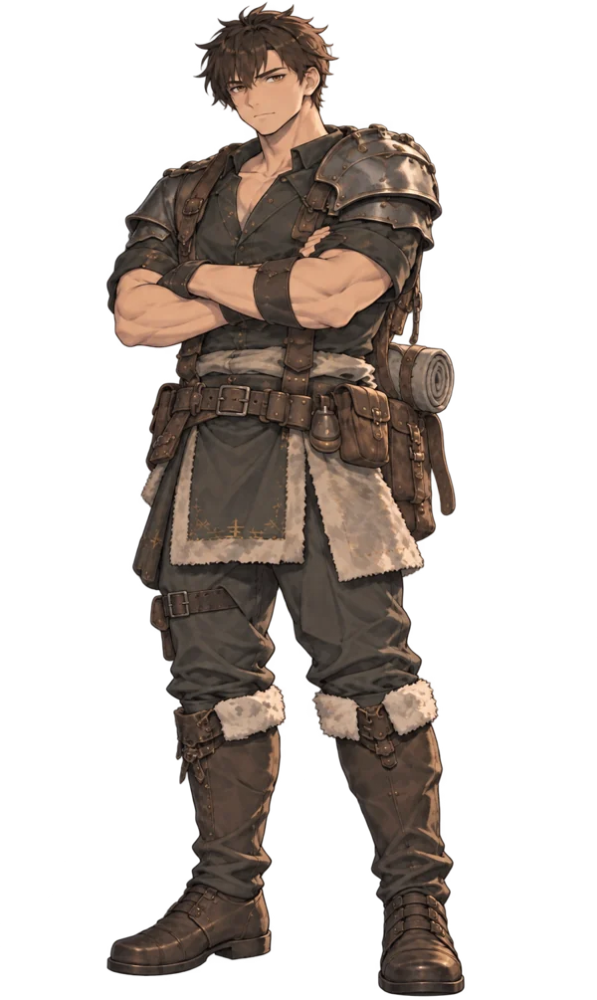
Fuerza y determinación
Entrena, bromea y vuelve a intentarlo. Tiene mucho que demostrar.
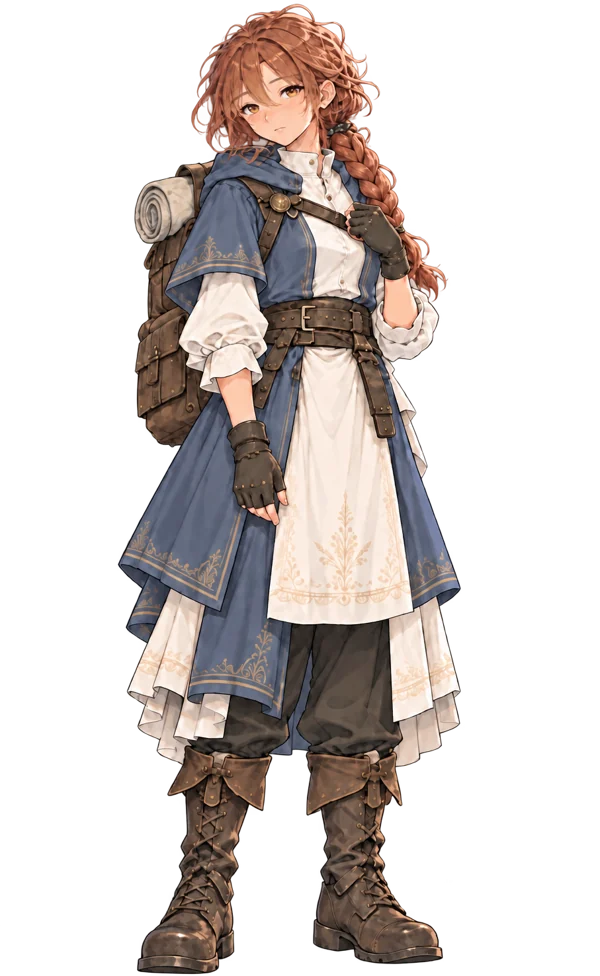
Medicina de campo
Antes de celebrar una victoria, comprueba que todos sigan en pie.
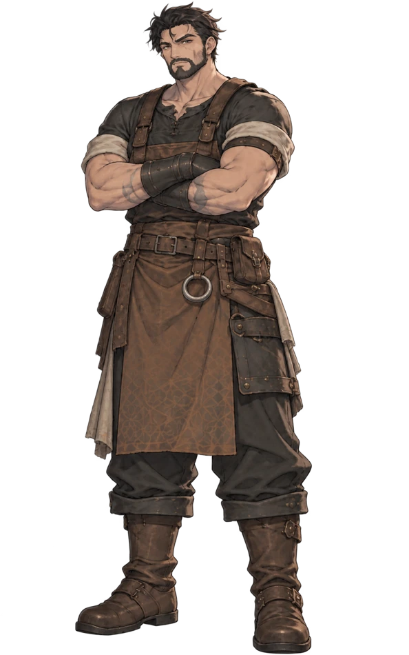
La forja de Aldenbrock
Entre herramientas y metal, siempre hay algo que aprender.
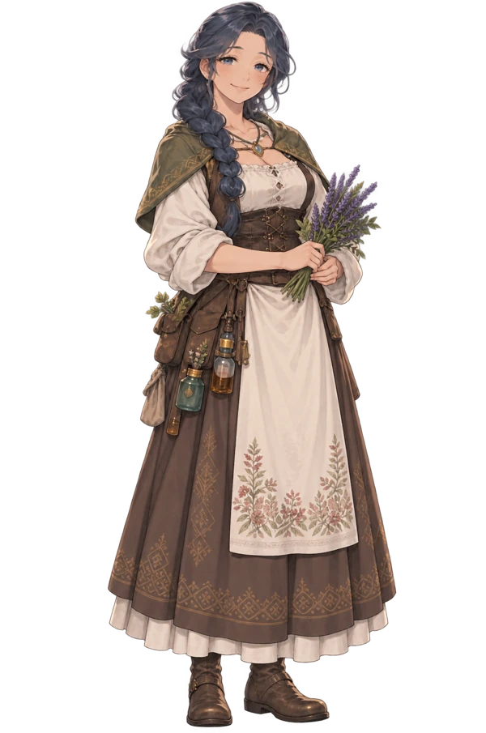
La boticaria
Pociones, ingredientes y consejos para preparar el siguiente viaje.
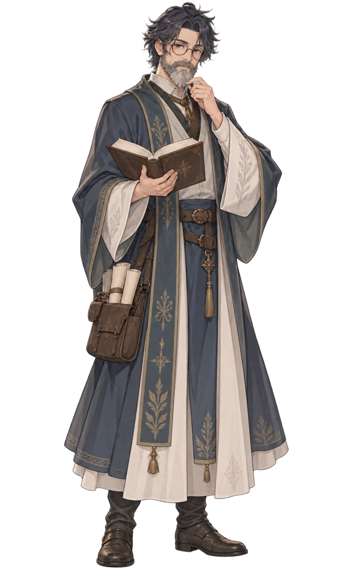
La escuela
Una buena pregunta puede enseñarte más que una respuesta rápida.
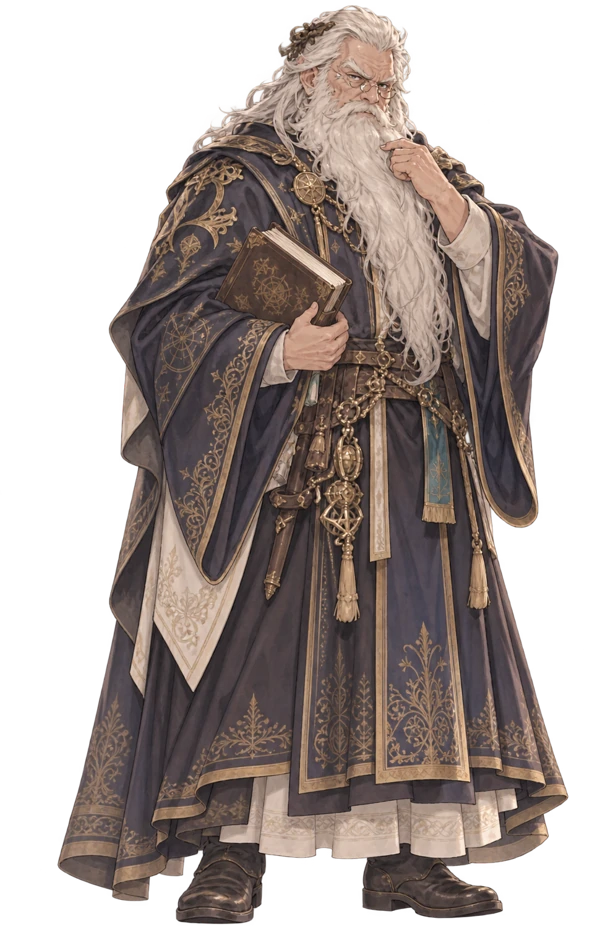
Alguien por conocer
Hay encuentros que invitan a escuchar antes de responder.
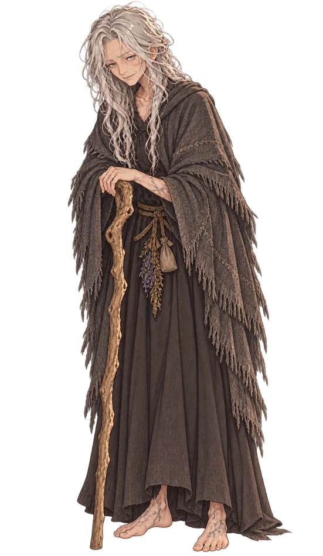
Un rostro en el camino
A veces, la aventura empieza con una conversación inesperada.
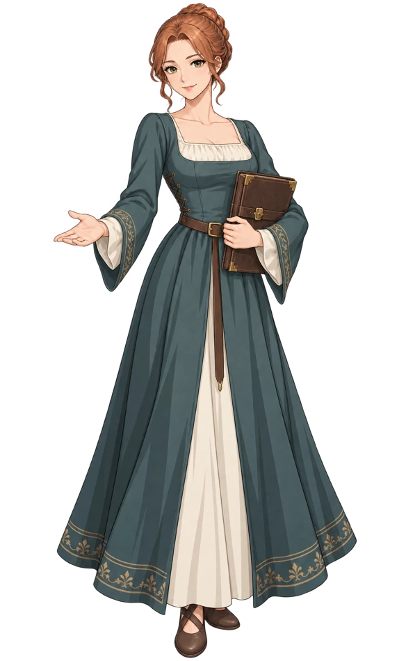
El gremio de Ciudadela
Si buscas trabajo, escucha con atención los encargos del gremio.
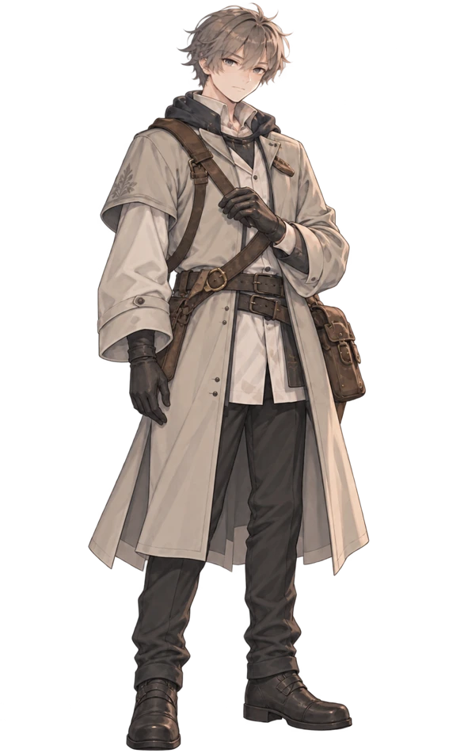
Observar antes de actuar
Tiene curiosidad de sobra y preguntas para compartir.
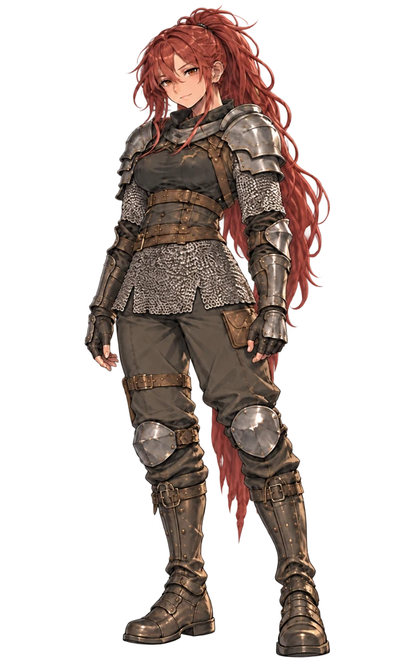
La práctica cuenta
Las armas se dominan con paciencia y muchas horas de práctica.
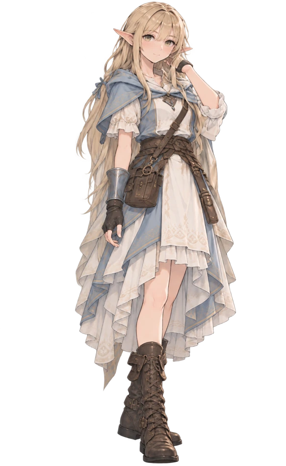
Conocer la ciudad
Una conversación breve puede abrir un nuevo camino.
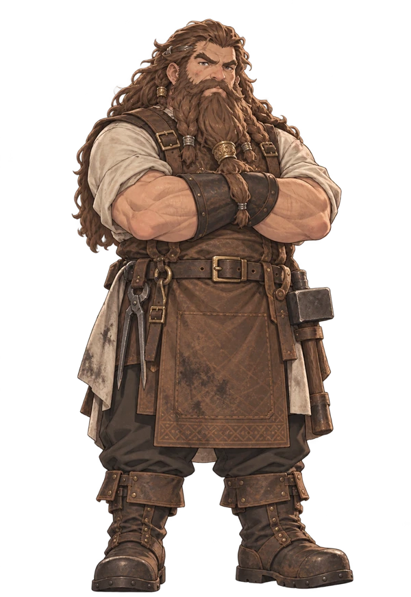
El taller de Ciudadela
Las herramientas están listas. Lo importante es saber qué necesitas.
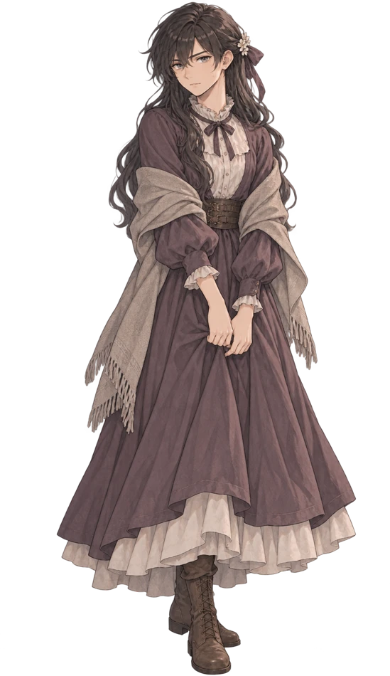
Un encuentro singular
Una peluca llamativa y una conversación que merece tu atención.
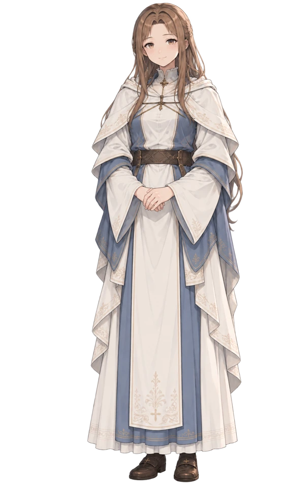
El templo-refugio
En una ciudad enorme, también hace falta un lugar para descansar.
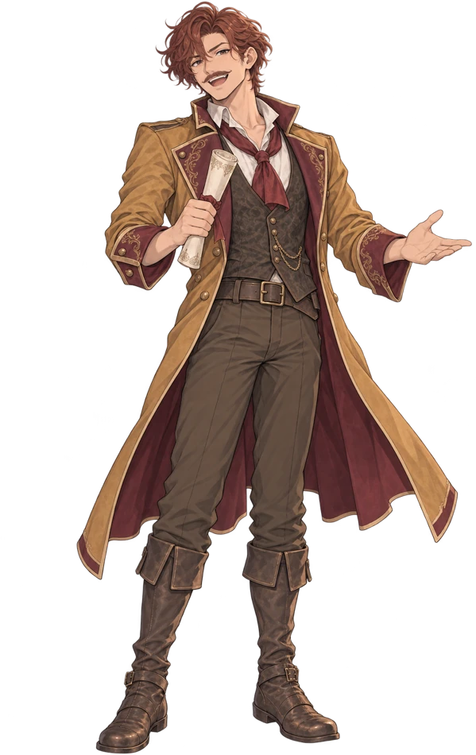
La entrada del Coliseo
Hay más que combates esperando junto a las gradas.
Pasa el ratón sobre una flecha, pulsa o desliza para conocer más rostros.
03 / Dentro de Braviestale
Combate, conversaciones y exploración. Un vistazo sin revelar la historia.
La fuerza del grupo
Elige cuándo atacar, defenderte o ayudar a un compañero. La nueva interfaz toma los colores de tu Don.
Combate por turnos · interfaz 0.1.6Tu primer paso
Habla con Bram, elige tu primera arma y aprende a moverte por Aldenbrock. El resto te espera dentro del juego.
Aldenbrock · captura real del juegoEl diario de campo
Tus encuentros alimentan el diario de campo. Consulta los bocetos y las observaciones para preparar tus siguientes combates.
Aldenbrock, paso a paso
Ubica las casas, revisa por dónde seguir y vuelve a los lugares que ya conoces.
04 / Empieza tu historia
La demo está en español. Explora Aldenbrock y Ciudadela, con un cierre completo para esta entrega.
Sin cuenta. Las versiones descargadas funcionan sin conexión.
Cómo empezarDemo v0.1.6 · 413.9 MB · ZIP
Demo v0.1.6 · 407.3 MB · TAR.BZ2
Demo v0.1.6 · 438.8 MB · APK
Demo v0.1.6 · Sin instalación
Descarga el ZIP. Pulsa con el botón derecho → Extraer todo. Abre la carpeta extraída y ejecuta Braviestale.exe. No lo ejecutes dentro del ZIP.
Descarga y extrae el TAR.BZ2. Abre Braviestale.sh. Si tu escritorio no lo ejecuta, permite ejecutar el archivo como programa en sus propiedades o usa bash Braviestale.sh desde esa carpeta.
Descarga el APK y ábrelo en tu teléfono. Si Android te pide permiso, permite a ese navegador o gestor de archivos instalar esta aplicación. Después de instalarla puedes retirar ese permiso. Abre Braviestale desde tus aplicaciones.
05 / Juega en el navegador
Sin instalación. Pulsa Jugar y espera a que termine la carga inicial. El juego está en español.
La primera carga descarga unos 250 MB; el resto de recursos llega durante el juego. Usa una conexión estable.
BRAVIESTALE
Tu aventura empieza al pulsar Jugar.Guarda desde el menú del juego. Las partidas web permanecen en este navegador; borrar sus datos o usar modo privado puede hacerte perderlas. Si el juego no abre, prueba una pestaña aparte o descarga tu versión.
Descargar paquete web · 402.9 MB ↓06 / Cómo jugar
El manual y la guía se abren en otra pestaña para que puedas leer a tu ritmo y volver al juego.
Controles y reglas
El manual del juego y la ayuda de recuperación: primeros pasos, atributos, equipo, combate, Dones, objetos y reglas avanzadas.
Abrir el manual ↗Contiene spoilers
Pasos detallados de Aldenbrock al cierre en Ciudadela, requisitos para desbloquear a los seis compañeros y cómo avanzar si te atascas.
Abrir la guía con spoilers ↗07 / El juego sigue creciendo
Pruebas pendientes: ejecución en Windows y Android físicos. El navegador puede tardar en su primera carga. Empieza una nueva partida para evitar incompatibilidades con guardados anteriores.
Ver release y archivos de integridad ↗Las releases 0.1.3, 0.1.2 y 0.1.0 siguen disponibles como versiones históricas.
Consultar historial ↗08 / Tu opinión cambia el juego
¿Qué te atrapó? ¿Dónde te perdiste? ¿Qué combate te hizo pensar? Tu experiencia ayuda a decidir qué mejorar en la próxima versión.
Si encontraste un error, indica tu plataforma, la versión 0.1.6, el lugar y qué estabas haciendo. Puedes compartir una captura en el formulario si te ofrece esa opción.
«Romance quiet» · música de Braviestale